주소 하나로 사이트를 다시 만드는 템플릿
AI(Artificial Intelligence) Website Cloner Template은 웹사이트 주소 하나를 받아 그 사이트를 고칠 수 있는 코드로 다시 만들어 줘요. Claude Code에서 명령어 한 줄에 주소만 붙이면 돼요. 화면 구성과 이미지, 폰트, 버튼을 눌렀을 때의 움직임까지 본 뒤에 코드를 짜요.
발표자는 이 도구를 지난 영상의 REA(Reverse Engineer Anything)와 이어서 소개해요. 아래 슬라이드 왼쪽이 이미 있는 앱을 뜯어보는 리버스 엔지니어링 도구 REA이고, 초록색 칸이 이번 도구예요. 오른쪽 노란 칸의 3.7만은 영상 시점의 GitHub 스타 수예요.
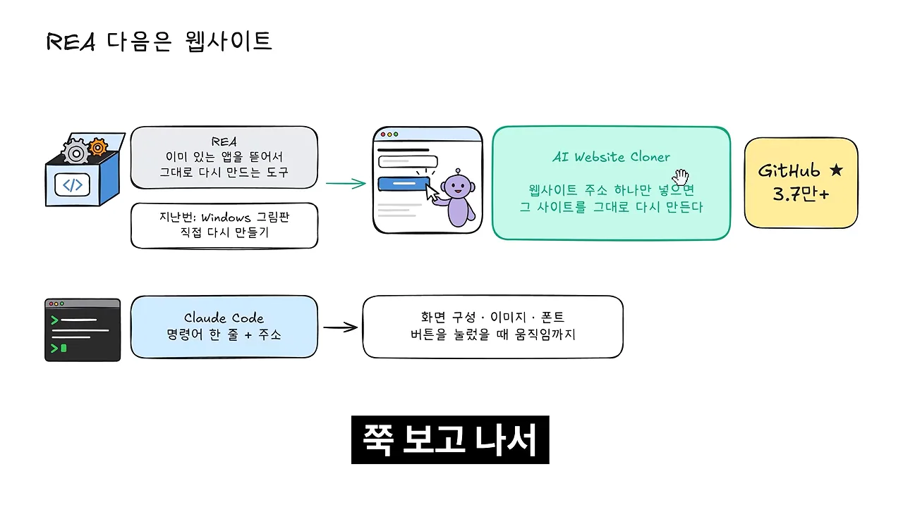
반응도 숫자로 보여 줘요. 왼쪽 위 Linus Ekenstam의 글이 3월에 퍼지기 시작한 출발점이고 조회수가 31만을 넘었어요. 오른쪽 막대는 스타 수가 4월 말 1.3만, 7월 중순 2.8만, 영상 시점 3.7만으로 늘어난 흐름이에요. 왼쪽 아래 Charly Wargnier의 글은 스크린샷을 찍어 따라 만드는 방식보다 똑똑하다고 평가해요.
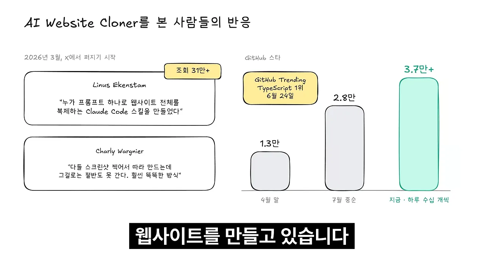
영상은 세 가지를 약속해요. 슬라이드의 세 카드 그대로, Supabase 웹사이트를 주소 하나로 다시 만들어 보기, 그걸 내 사이트 만들 때 써먹는 방법, 남의 사이트를 베끼는 거니까 어디까지 괜찮은지예요.
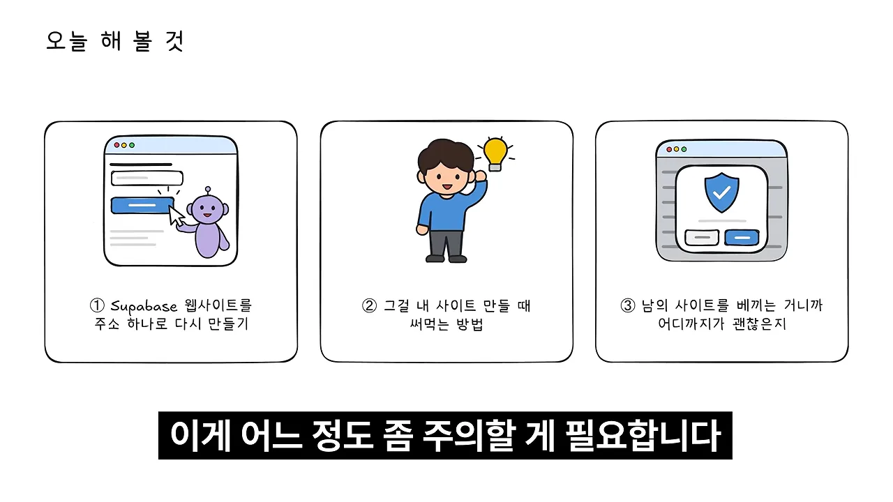
네 단계로 일하고, 코드는 새로 짜요
구조부터 볼게요. 슬라이드 위쪽처럼 Next.js 프로젝트 틀에 Claude Code가 쓸 복제 명령어를 더한 템플릿이에요. 쓰는 법은 아래 검은 칸의 /clone-website https://주소 하나예요. 발표자는 슬래시 명령어로 써도 되고 일반 명령으로 스킬처럼 써도 된다고 해요. 어느 쪽이든 복제할 주소는 꼭 들어가야 해요.
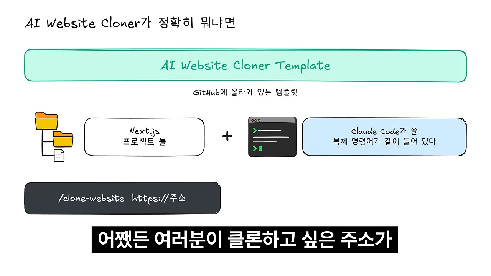
Map, Observe, Build, Compare
명령을 받은 에이전트는 네 단계로 일해요. 슬라이드 맨 오른쪽 노란 칸과 점선 화살표가 핵심이에요. 다른 곳을 고치고 다시 비교하는 일을 Build와 Compare 사이에서 계속 반복해요.
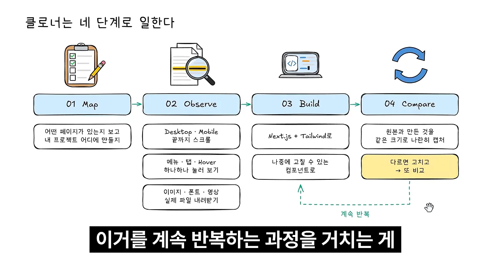
| 단계 | 하는 일 |
|---|---|
| 01 Map | 어떤 페이지가 있는지 보고, 내 프로젝트 어디에 만들지 정해요 |
| 02 Observe | 데스크톱·모바일로 끝까지 스크롤하고, 메뉴·탭·hover를 하나하나 눌러 보고, 이미지·폰트·영상 파일을 내려받아요 |
| 03 Build | Next.js와 Tailwind로 나중에 고칠 수 있는 컴포넌트를 만들어요 |
| 04 Compare | 원본과 만든 것을 같은 크기로 나란히 캡처하고, 다른 곳을 고친 뒤 또 비교해요 |
원본 코드를 빼 오는 건 아니라는 설명
복제라고 하면 불법부터 떠오르죠. 발표자의 답이 아래 슬라이드예요. REA 줄은 앱 안을 뜯어봐요. Website Cloner 줄은 화면에 보이는 걸 보고 똑같이 보이게 새로 짜요. 그래서 맨 아래 두 칸처럼 겉모습은 비슷해도 코드는 완전히 다를 수 있다는 거예요.
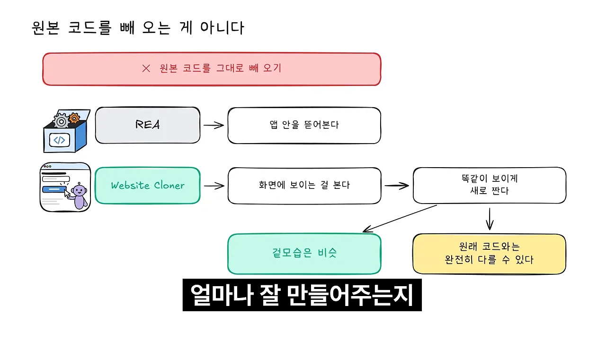
발표자는 이걸 레퍼런스 스크린샷을 찍어 AI에게 따라 만들게 하던 흔한 방식을 체계화한 것으로 설명해요.
Supabase로 시험하고, 프롬프트 한 번으로 설치해요
시험 대상은 Supabase예요. 데이터베이스와 로그인 기능을 붙일 때 많이 쓰는 서비스예요. 고른 이유가 아래 슬라이드의 세 줄이에요. 위 칸은 공개 저장소의 apps/www가 곧 홈페이지 코드라는 뜻이고, 가운데 칸은 라이선스가 Apache 2.0이라는 뜻이에요. 검은 칸은 robots.txt가 봇 전부를 허용한다는 내용이에요.
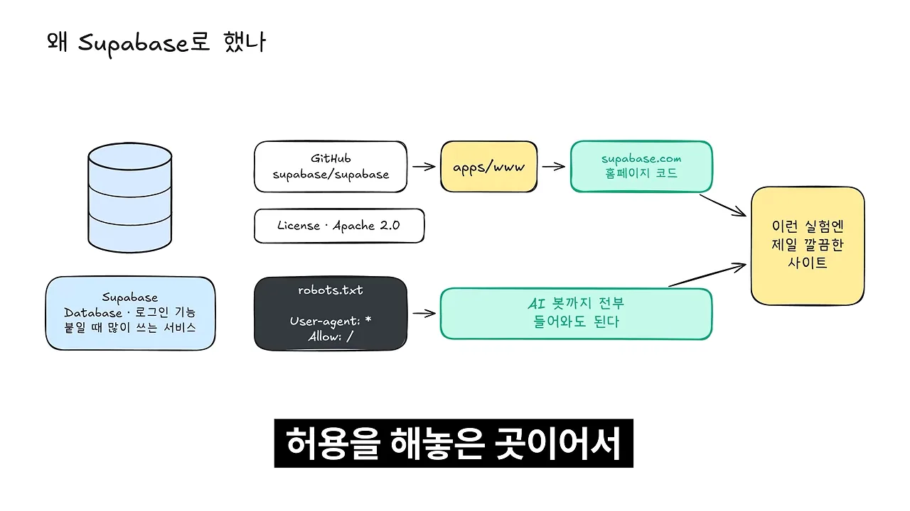
설치는 프롬프트 붙여넣기
저장소 README를 내려가면 Quick Start가 나와요. 파란색으로 선택된 영어 문단이 에이전트에 그대로 붙여넣을 프롬프트예요. 어디에 받을지 묻고, 저장소를 받아 의존성을 설치하고 검사까지 돌리라는 내용이에요.
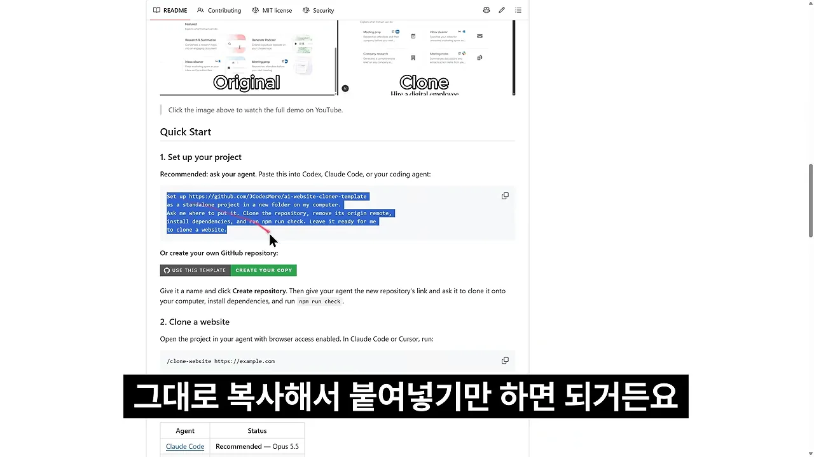
- 조건을 챙겨요 — Node.js 24 이상, 그리고 에이전트가 브라우저를 열 수 있는 설정이 켜져 있어야 해요.
- 모델을 골라요 — 발표자는 Opus 5.5에 엑스트라를 선택했어요.
- Quick Start 프롬프트를 붙여넣어요 — 설치 위치를 물으면 답해요. 끝나면 클론하려면 이 명령어를 입력하라는 안내가 떠요
- 복제를 시작해요 —
/clone-website https://supabase.com/을 입력해요. 할 일 목록이 뜨고 작업이 시작돼요
아래 화면이 그 순간이에요. 맨 아래 목록이 앞서 본 네 단계의 실제 모습이고요. 위쪽 'Things to be aware of'도 읽어 볼 만해요. 설치 때 npm ci가 의존성 취약점 15건을 보고했고, 에이전트는 lockfile이 바뀌니 고치지 않았다고 적어 뒀어요. 그 위 문단에는 이 세션을 시작할 때 명령 파일이 없었으니, 명령이 안 보이면 새 세션을 열라고 나와요. 발표자는 세션을 다시 켜지 않고 그대로 입력했어요.
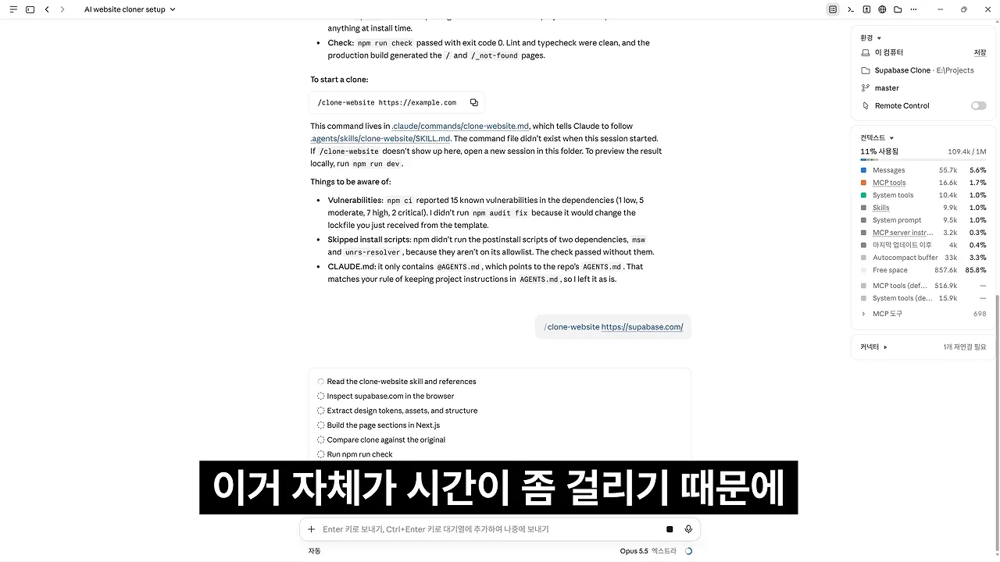
쓰면 안 되는 경우 세 가지
복제가 도는 동안 발표자는 저장소의 금지 항목부터 읽어요. 아래는 README를 한국어로 번역한 화면이에요. 가운데 '다음과 같은 용도로 제작되지 않았습니다' 아래 세 줄이 그 내용이고, 마우스가 두 번째 줄을 가리키고 있어요.
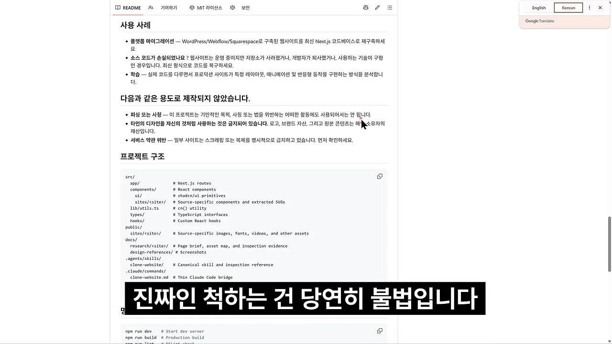
| 금지 항목 | 발표자의 설명 |
|---|---|
| 피싱 또는 사칭 | 남의 사이트를 똑같이 만들어 진짜인 척하는 건 당연히 불법이에요 |
| 타인의 디자인을 자기 것처럼 쓰기 | 로고, 브랜드 자산, 원본 콘텐츠는 소유자의 재산이에요 |
| 서비스 약관 위반 | 긁어 가기나 복제를 아예 금지한 사이트가 있어요. 라이선스와 이용 약관을 꼭 확인해야 해요 |
코드가 공개된 Supabase도 예외가 아니에요. 로고와 이름은 Supabase 것이고, 홈페이지의 고객사 로고도 각 회사 것이에요. 그래서 발표자는 복제본을 어디에도 올리지 않고 자기 컴퓨터에서 공부용으로만 봐요.
결과: 왼쪽이 복제본, 오른쪽이 원본
결과는 브라우저 두 개를 나란히 띄워 보여 줘요. 주소창을 보면 왼쪽이 localhost:3100인 복제본, 오른쪽이 supabase.com인 원본이에요. 아래 화면의 Storage와 Realtime 카드를 비교해 보세요. 카드 문구와 아이콘 격자, 지구본 그림까지 같아요. 빨간 동그라미는 발표자가 원본의 마우스 효과를 짚은 표시예요.
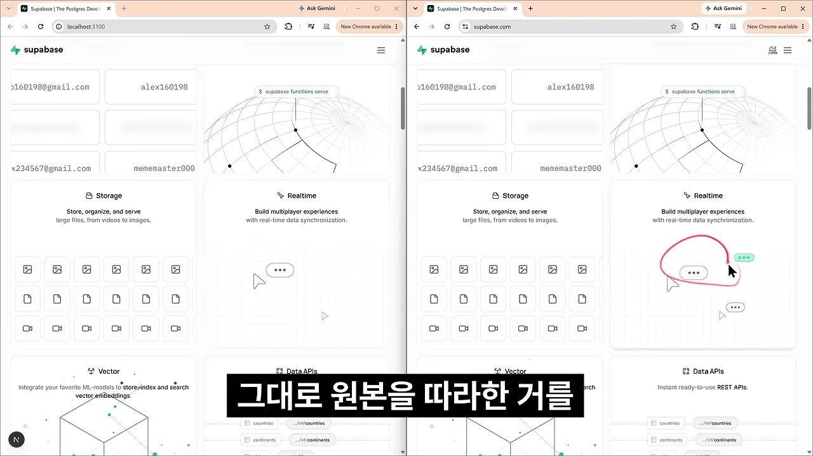
발표자도 단서를 하나 달아요. Supabase가 코드를 공개하고 있으니 복제가 더 수월했을 거라는 점이에요.
에이전트가 실제로 한 일
Claude 화면을 다시 보면 작업 기록이 남아 있어요. 위에서 두 번째 문단은 HTML과 스타일시트를 내려받아 실제 디자인 토큰과 파일 주소를 읽겠다는 내용이에요. 네 번째 문단은 Playwright로 헤드리스 Chrome 캡처 스크립트를 쓰겠다는 내용이고요. 그 아래에는 섹션 12개의 렌더링된 DOM을 저장해 실제 Tailwind 클래스 이름을 재사용하겠다고 적혀 있어요.
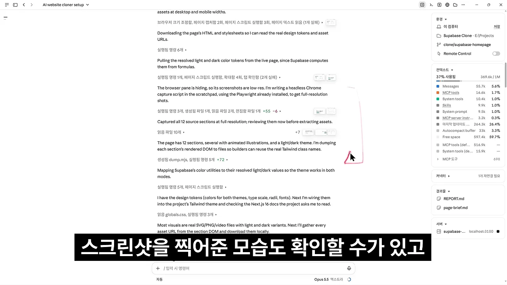
여기서 앞의 설명을 조금 고쳐 읽어야 해요. '원본 코드를 빼 오지 않는다'는 건 원본 저장소를 가져오지 않는다는 뜻에 가까워요. 브라우저로 받는 HTML과 CSS, 렌더링된 DOM은 읽고 일부를 재사용해요. 아래 그림은 시연 화면에 적힌 내용만 세 묶음으로 나눈 거예요.
에이전트가 적은 차이점
작업 끝에 나온 보고서가 아래 화면이에요. 'Checks I ran'에는 너비와 테마별로 원본과 섹션 단위로 비교했고, 상호작용 검사 12개가 모두 통과했다고 적혀 있어요. 'Where it differs from the live site'가 차이점 목록이에요. 'Links' 줄을 보면 복제한 건 홈페이지뿐이에요.
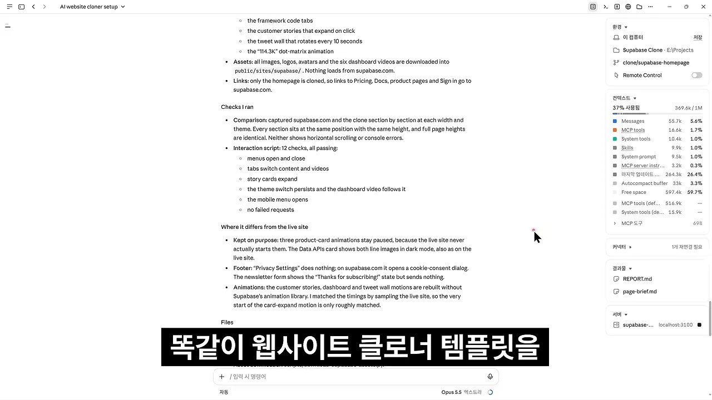
다른 사이트에서 막히면: 프록시
발표자는 Supabase가 특이한 경우라고 선을 그어요. 봇까지 열어 둔 사이트라서 막힘없이 됐다는 거예요. 요즘은 클릭만 보고 사람인지 봇인지 판단해 접속을 막는 사이트가 많아졌어요. 이 템플릿은 브라우저로 화면 크기별로 사이트를 보며 버튼 수십 개를 눌러 보는 방식이라 그 영향을 직접 받아요.
막히면 IP(Internet Protocol)가 플래그를 받고, 보통 429 에러로 나타난다고 해요. 발표자가 내놓는 대안이 프록시예요. 내 주소 대신 프록시 주소로 접속하는 방식이에요. 아래 그림은 영상이 말로 설명한 세 경로를 한 장으로 옮긴 거예요.
Webshare를 MCP로 연결하기
시연에 쓴 서비스는 Webshare예요. MCP(Model Context Protocol) 서버가 있어서 Claude에 붙일 수 있어요. 아래 문서 화면에서 위쪽 Server URL(Uniform Resource Locator)과 'Claude Code' 탭의 명령을 보세요. Claude Code는 이 한 줄을 복사해 터미널에서 실행하면 돼요.
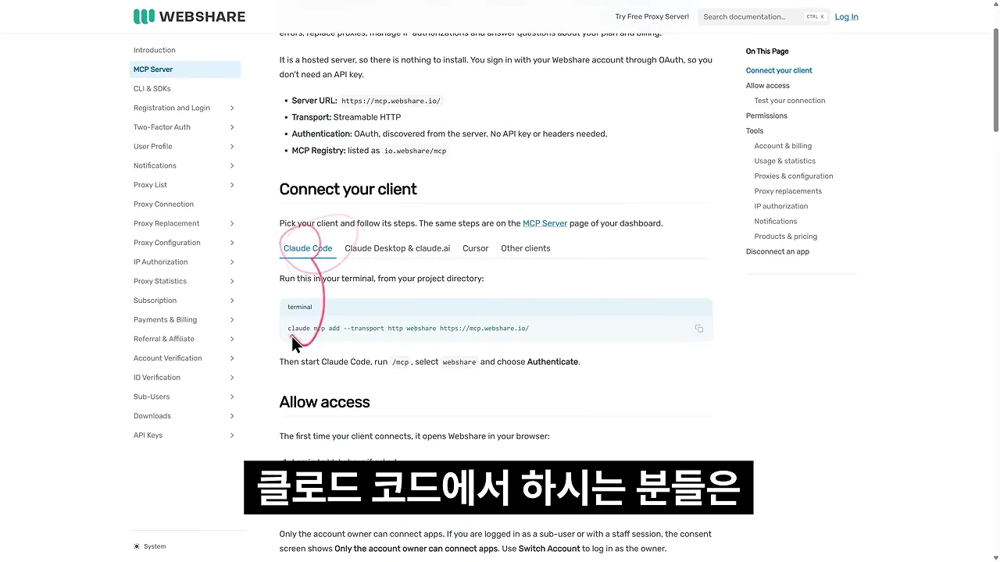
Claude 데스크톱이나 웹에서는 설정의 커넥터 화면에서 추가 버튼을 눌러 커스텀 커넥터를 만들어요. 발표자는 말로 '클로드 코드 커넥터'라고 하지만, 화면은 데스크톱 앱 설정이에요. 아래 창의 위쪽에 이름 Webshare와 주소가 들어가 있고, 빨간 표시가 있는 '지금 로그인'이 인증 방식이에요.
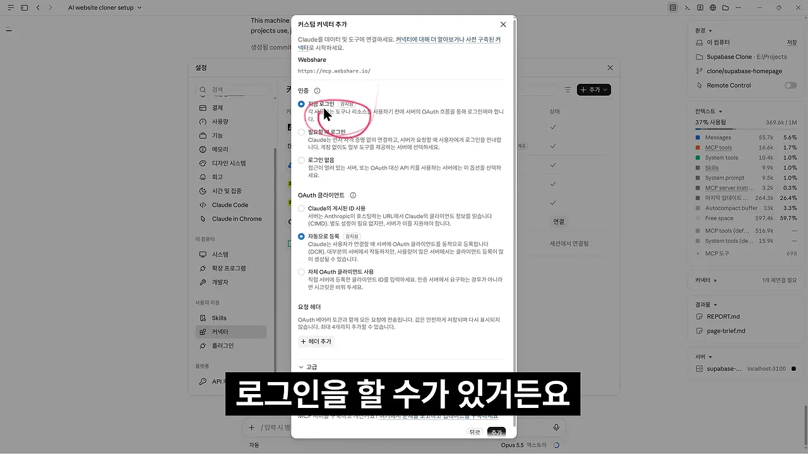
연결한 뒤 쓸 수 있는 프록시를 물어보면 표로 답해요. 무료로 쓸 수 있는 10개가 나라와 도시별로 정리돼 있어요. 표 아래에는 바르샤바 프록시의 국가 판별 신뢰도가 낮다는 경고도 있어요. 접속하는 사이트가 그 IP를 다른 나라로 볼 수 있다는 뜻이에요.
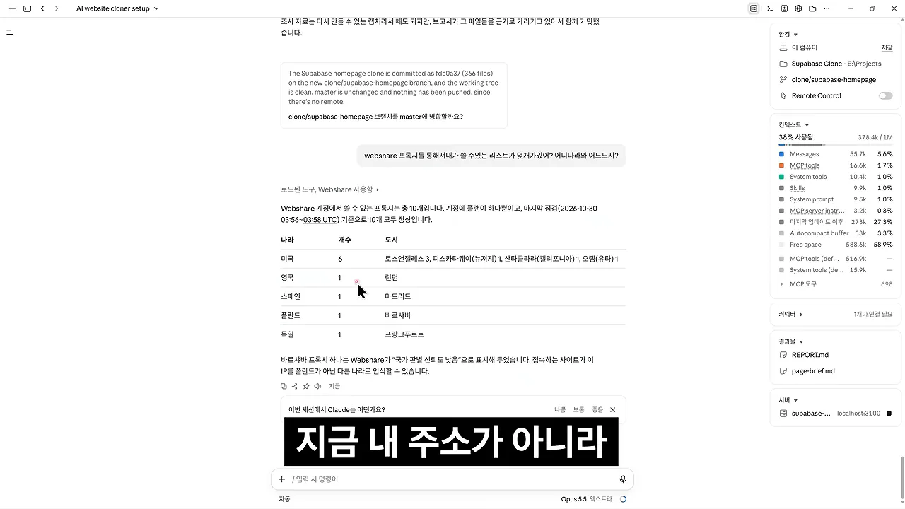
마지막으로 같은 Supabase 복제를 미국 프록시 하나로 다시 시작해요. 할 일 목록의 '프록시로 원본 조사·에셋 수집' 줄을 보면, 원본 조사부터 프록시를 거쳐요. 다만 영상은 여기까지만 보여 줘요. 완성 결과는 나오지 않고, Supabase는 애초에 막힌 사이트도 아니었어요. 그래서 프록시가 차단을 풀어 주는 장면은 이 영상에서 확인할 수 없어요.
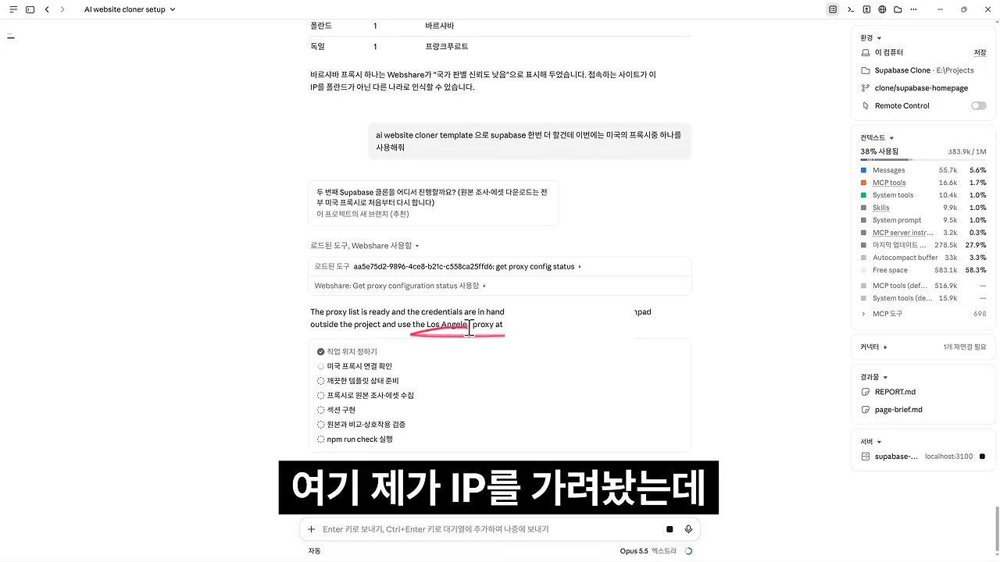
언제 쓰고, 무엇이 달라졌나요
저장소가 말하는 용도는 세 가지예요. 아래 슬라이드 카드 순서대로 볼게요. 세 카드 모두 내 사이트이거나 공부 목적이라는 점이 앞의 금지 항목과 짝을 이뤄요.
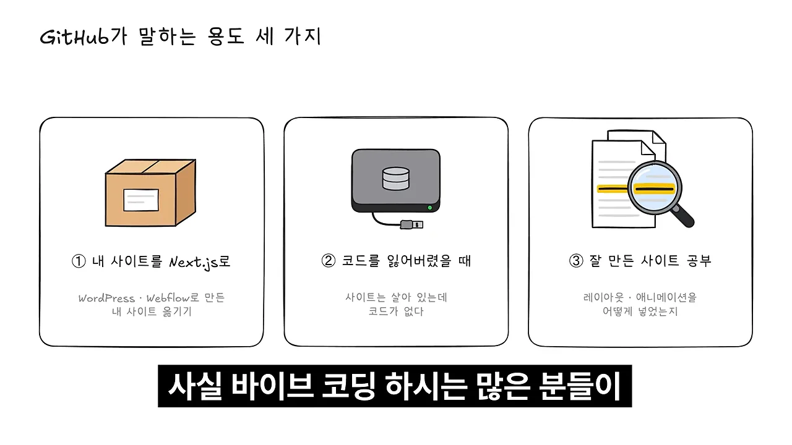
| 용도 | 이럴 때 써요 |
|---|---|
| 내 사이트를 Next.js로 | WordPress나 Webflow에 락인돼 코드를 밖으로 가져오기 어려울 때 |
| 코드를 잃어버렸을 때 | 사이트는 살아 있는데 원본 소스가 없어 유지 보수가 힘들어질 때 |
| 잘 만든 사이트 공부 | 레이아웃과 애니메이션을 어떻게 넣었는지 배워 바이브 코딩 실력을 올리고 싶을 때 |
발표자가 가장 의미 있다고 보는 건 세 번째예요. 아래 슬라이드가 그 이유예요. 맨 위 회색 줄은 '그냥 만들어 줘'라고 하면 어디서 많이 본 AI 티 나는 사이트가 나온다는 뜻이에요. 가운데 초록색 줄은 잘 만든 사이트를 복제해 간격과 글자 크기, 섹션 순서를 배우면 내 사이트 방향을 훨씬 잘 잡는다는 뜻이고요. 맨 아래 빨간 칸은 그대로 복제해 내 서비스처럼 쓰는 경우예요. 발표자는 이걸 짝퉁 사이트라고 부르고, 문제가 생길 수밖에 없다고 강하게 말해요.
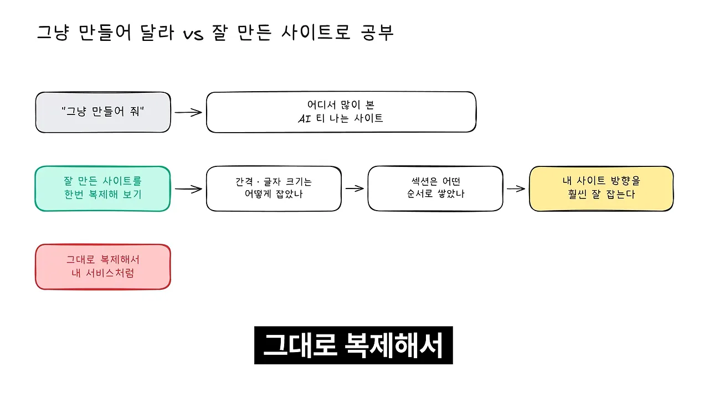
발표자가 생각하는 바람직한 순서도 같아요. 마음에 든 UI(User Interface)를 복제해 구조를 공부하고, 배운 구조를 내 사이트에 적용하고, 내 취향을 더해 발전시키는 거예요.
문턱이 낮아지면 달라지는 것
마지막 슬라이드가 영상의 결론이에요. 왼쪽의 REA와 Website Cloner가 이미 있는 걸 보고 다시 만드는 문턱을 낮췄어요. 그런데 나만 쉬워진 게 아니라 다른 사람도 쉽게 카피를 만들어요. 그래서 오른쪽 노란 칸처럼 어떤 사이트를 골라 어디까지 쓰는지가 더 중요해졌다는 거예요.
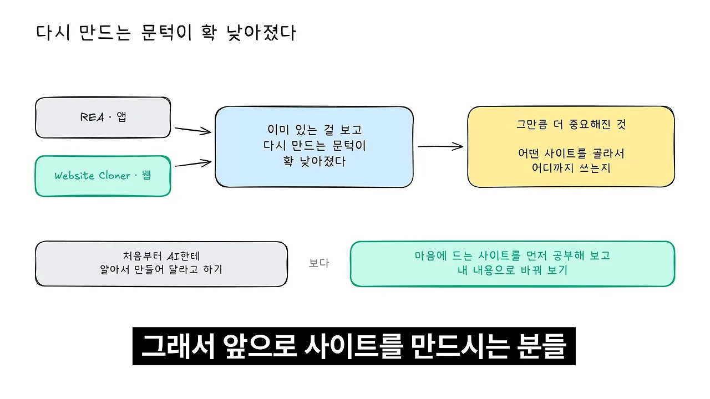